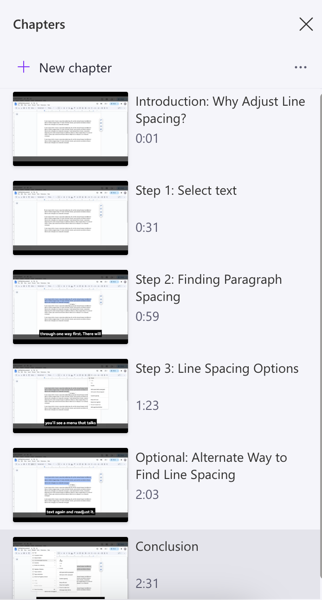
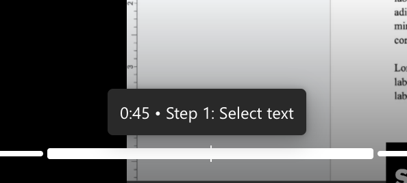
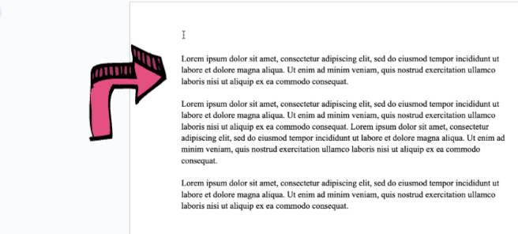

Cognitive load is the energy and thought put into completing certain tasks. Consider the best practices and tips below for ClipChamp.
POUR comes from the W3C for digital accessibility is the foundation of digital accessibility, ensuring videos are accessible to people with disabilities. POUR in relation to video content:
Perceivable: try to use closed captions or another text alternative for auditory information, as well as audio descriptions for visual information.
Operable: ensure that content is keyboard-accessible, and that there is time to read or watch the content.
Understandable: captions should be accurate and video controls should be straightforward.
Robust: make the content on the screen/video is compatible with different assistive technologies.
Adhering the POUR principles make video content accessible to people with visual, auditory, motor, or cognitive impairments.
Alongside principles to consider when creating an accessible video, there are design tips. Consider the stylistic and content tips below to accommodate the needs of your audience.
Length is relevant due to limited attention spans of users; consider portions of a video that might be slow or can be removed.
Try to:
Speak slowly
Keep videos short
Breaking content into manageable portions of video can help users consume content quicker and more effectively.
ClipChamp allows you to split clips and organize sequentially. Adding chapters to aid viewer navigation throughout the video can create distinction between steps and tasks.
Try to:
Break a section of video into segments rather than one continuous take
Chapters Example:

The video is broken up into chapters: Introduction → Step 1: Select text → Step 2: Finding Paragraph Spacing → Step 3: Line Spacing Options → Optional: Alternate Way to Find Line Spacing → Conclusion)
Similar to the chunking and chapters, information is sometimes more easily consumed when broken up into smaller sections. Try to decisively break up steps while verbalizing all actions. This will give people time to absorb the information and follow along.
Pause and speak slowly
Say the task and what you’re about to show: “Now I'll click the Export button in the top right corner”
Avoid multitasking: instead of saying copy and paste a piece of text, break it down to three steps, show how to select, copy, and then paste the text.
Having a video or task that has broken down information makes it much less strenuous to consume. Long monologues in videos, or long paragraphs of text, become monotonous and hard to focus on. A good video will allow viewers to jump around and allow viewers to stay oriented regardless of previous knowledge.
Use on-screen labels
Reiterate spoken instructions
Keep visual aspects consistent
Make each chunk able to stand alone
Skimmability Example:
Dividing up a video into chapters is a good example of aiding skimmability. Below is an example of effective chunking.

On-Screen Markup can significantly help individuals see what tiny button they have to press. Labels, zooming in, and highlighting are all common ways to highlight important parts of a step. Annotation can support viewers with hearing or vision difficulties
Use ClipChamp’s text and annotation tools to highlight key areas of the screen, label buttons, and callouts.
Example of Annotation:
